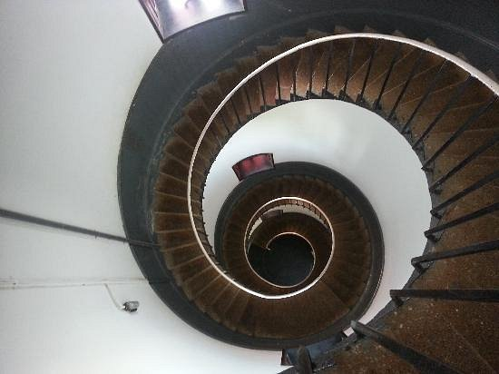

Kollam - Gateway to Backwaterrs of Kerala
1.JATAYU EARTH'S CENTER NATURE PARK

The world’s largest bird sculpture and within it a rock theme park for adventure enthusiasts is what today pays tribute to the mythical bird from the Indian epic Ramayana – Jatayu.
Legend has it that Jatayu tried to save Sita (wife of Lord Rama) when Ravana, a demon king, was abducting her in his airborne chariot. Jatayu is said to have fought valiantly and fallen on these rocks, grievously injured.
The Jatayu Adventure Center (Jatayu Earth's Center), at Chadayamangalam, 50 km from Thiruvananthapuram, is a unique combination of artistry, mythology, technology, culture, adventure, leisure, and wellness. The virtual reality museum and the theatrical magic that renders the story of Jatayu add to the magic of the destination.
A creation of Mr. Rajiv Anchal, this destination is sure to leave each visitor awestruck. The state of the art ropeway offers one a bird’s eye view of God’s Own Country just as the helicopter rides do as well.

The Jatayu Adventure Center offers the largest adventure park within a natural terrain. Paintball, valley crossing, bouldering, zip line, trekking, archery, rappelling, jumaring and wall climbing are among the myriad activities available here. The climbing activities are designed around the natural rock formations on the hillside. While you are relishing the adrenaline rush the park offers you make sure you explore the multi cuisines at the food court with a panoramic view and the age-old Siddha Cave Healing Center as well for a complete, wholesome experience.
2.Neendakara Port

The Neendakara is a famous fishing port, located 9 km north of Kollam district in Kerela. This major sea port is one of the biggest in the region, with the capacity to contain over 500 fishing boats at a time. The place is so beautiful that people from different parts of the state, country and even abroad come here for a divine holiday experience in the lap of mother nature. The Neendakara Port offers an excellent view of the surroundings, from where the visitors can even watch the delightful sight of Ashtamudi Lake, converging into the vast sea.
The place has many reasons to attract visitors and one such reason is the existence of Indo-Norwegian Fisheries Community Project, the headquarter of which is located at the Neendakara Port. This place is a hub of fishing and other marine activities of the region and the Indo-Norwegian Fisheries Community Project gives support to the fishing activities here. Some of the activities running under this project are setting up of a Fishermen Training Institute and establishment of a boat building yard at Sakthikulangara along with a refrigerator plant.
There is no perfect time to visit this picturesque destination and one can come here at any time of the year. As Kollam is well-connected through railway and airport, reaching Neendakara Port becomes quite easy for the travel junkies.
3.Palaruvi

From a distance, you see for yourself why this beautiful cascade in the middle of the woods is given the name Palaruvi. 'Pal' means milk and 'aruvi' is a stream in Malayalam. The liquid power that blasts down from the edge of a rocky hill some 300 ft high is so mighty that water froths and mists turn into milky white in the sunlight. The view is electrifying even for the most depressed of the souls.
The moodswings
In summer, the cascade wanes thin, revealing the intense heat and the dryness in the woods beyond. But even a strand of water from Palaruvi is enough to revitalize your spirits like nothing else can in the season. You’d never want to come away from the bath you take in the midst of woods.
But if you want to see Palaruvi in her most violent mood, call on her during monsoon when this erratic drizzle that drenches you softly, changes its mood, gathering all its might from the dark clouds. You can see how the monsoon punishes those gullies and large tracts inside the forest that dared to dry up during summer. Now all paths inside the woods lead to one destination – the Palaruvi waterfalls. A mighty cascade thunders down which can be heard from miles afar. Get into the natural pool where the cascade falls. Feel the might of water plummeting from such height as it kneads your body inch by inch like a skilled masseuse.
The spot is replete with history, as you can see mandapams, that testify to a time when royal persons visited the Palaruvi, perhaps, to take advantage of the rejuvenating qualities of a bath in the crystalline white waters.
Many believe water in Palaruvi has medicinal properties. You’d only have to climb the rock, walk beyond the cascade to realize what they meant by it. Palaruvi may not be giving you the pristine glacial waters like the Himalayas, but what you get drenched in, flows along a forest rich with plants that have medicinal properties, and also rocks with their mineral contents. Add to that the vigor of water falling down on your body from some 300mts of height! You’d come away from the showers newborn, looking ready for longer treks in the woods.
4.Thangassery Light House

The Thangassery Lighthouse, also known as the Tangasseri Light House, boasts of being the second tallest on the entire coast of Kerala and is thus even one of the most visited lighthouses in the state on this account. Located at Tangasseri in the city of Kollam, it is one of the two lighthouses in the Kollam Metropolitan Area and is presently under the surveillance of the Chennai Directorate General of Lighthouses and Lightships.
The majestic tower is clearly visible and distinct, with its painted red and white oblique bands, and looks pretty indeed in all its glory and majesty. The tower has a total height of 41 metres, or 135 feet, and has been operational since the year 1902.

5. Vizhinjam Light House
Perched on a mountain, Vizhinjam lighthouse is the highest lighthouse in Kovalam that offers the spellbinding view of the sea. It is because if this place that the nearby beach was started knowing as the Lighthouse beach. The lighthouse is 35 m tall, and from its highets point one can see the stunning view of the sea.
Vizhinjam Lighthouse happens to be the largest lighthouse in Kerala. Perched atop the green dressed Kurumkal hill, approaching it is not at all a problem. One can take a bus, auto rickshaw or car from anywhere in the city to reach the lighthouse.
Surfing and motor boat riding are two of the prominent activities that can take part in on a visit to the lighthouse beach, which is located quite close to the Vizhinjam lighthouse. Do climb up the top of the lighthouse to see the beautiful view sea.